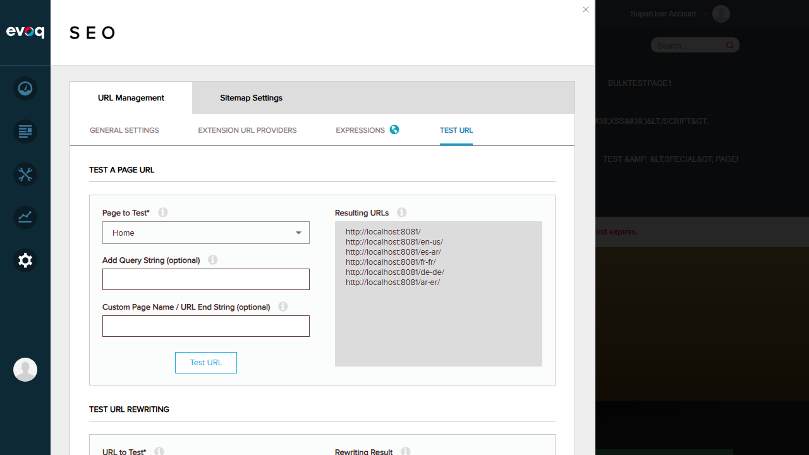
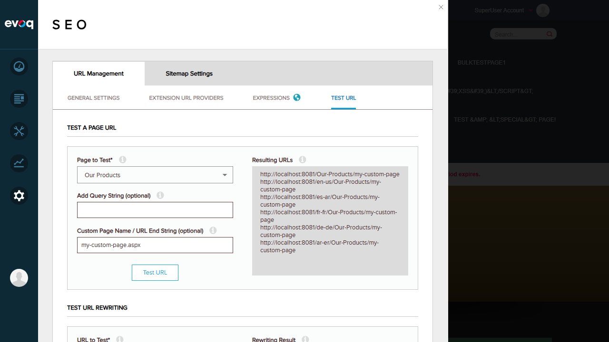
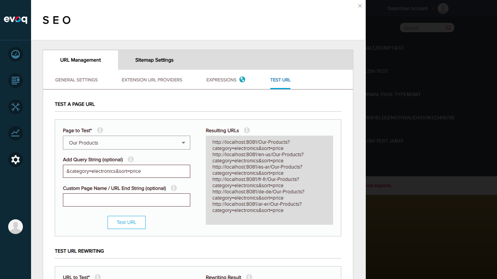
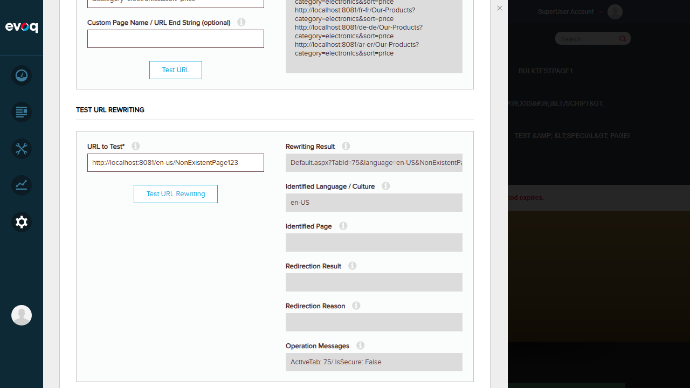

Admin > Persona Bar > Settings > SEO > URL Management > TEST URL
Description:
Test URL generation for specific pages with custom parameters and query strings
Test Date:
January 6, 2026
Tester:
Claude Code (Automated)
Test Results
Test 1: URL Generation for Existing Page
PASS
Objective: Test URL generation for an existing page without any custom parameters
Steps:
Navigate to Settings > SEO > URL Management > TEST URL tab
Select "Home" page from the "Page to Test" dropdown
Click "Test URL" button
Verify resulting URLs are generated for all locales
Expected Result: URLs should be generated for the selected page across all configured locales
Actual Result: Successfully generated 6 URLs for all locales (en-US, es-AR, fr-FR, de-DE, ar-ER, and default)
Test URL Tab Interface

Generated URLs for Home page showing all locale variations
Test 2: URL Generation with Custom Page Name
PASS
Objective: Test URL generation with a custom page name/URL end string
Steps:
Select "Our Products" page from dropdown
Enter my-custom-page.aspx in "Custom Page Name / URL End String" field
Click "Test URL" button
Verify custom page name is appended to URLs
Expected Result: Generated URLs should include the custom page name
Actual Result: URLs correctly generated with /Our-Products/my-custom-page path for all locales. Note: The .aspx extension was automatically stripped as expected.

URLs generated with custom page name showing locale variations
Test 3: URL Generation with Query String Parameters
PASS
Objective: Test URL generation with custom query string parameters
Steps:
Select "Our Products" page
Enter &category=electronics&sort=price in "Add Query String" field
Clear the custom page name field
Click "Test URL" button
Verify query string is appended to URLs
Expected Result: Generated URLs should include the query string parameters
Actual Result: URLs correctly generated with ?category=electronics&sort=price query string appended to all locale variations

URLs generated with query string parameters
Test 4: URL Rewriting Test (Valid URL)
PASS
Objective: Test URL rewriting functionality with a valid friendly URL
Steps:
Scroll to "TEST URL REWRITING" section
Enter http://localhost:8081/en-us/Our-Products in "URL to Test" field
Click "Test URL Rewriting" button
Verify rewriting results show correct page identification
Expected Result: System should correctly identify the page, culture, and provide rewriting result
Identified Page: (empty - correctly indicates page not found)
Operation Messages: ActiveTab: 75/ IsSecure: False (TabId 75 appears to be the 404 error page)

Error handling for non-existent page URL
Test Summary
Test Case
Description
Status
Test 1
URL Generation for Existing Page
PASS
Test 2
URL Generation with Custom Page Name
PASS
Test 3
URL Generation with Query String Parameters
PASS
Test 4
URL Rewriting Test (Valid URL)
PASS
Test 5
URL Rewriting Test (Invalid URL - Error Scenario)
PASS
Overall Result: 5/5 Tests Passed (100%)
Observations
Multi-locale Support: The URL generation feature correctly generates URLs for all configured locales (en-US, es-AR, fr-FR, de-DE, ar-ER) simultaneously, which is valuable for multilingual sites.
Custom Page Name Processing: The system automatically strips .aspx extensions from custom page names and converts them to friendly URL format.
Root Page Behavior: When testing the Home page (root page) with a custom page name, the custom name doesn't affect the URL since Home pages typically use the root URL path.
Query String Handling: Query strings are properly appended with the correct delimiter (?) and maintain proper formatting.
Error Handling: The URL Rewriting test gracefully handles non-existent pages by leaving the "Identified Page" field empty while still providing useful debugging information.
Admin-Only Access: Based on code review, the TestUrl and TestUrlRewriting endpoints are protected with [DnnAuthorize(StaticRoles = "Administrators")] attribute, ensuring proper access control.